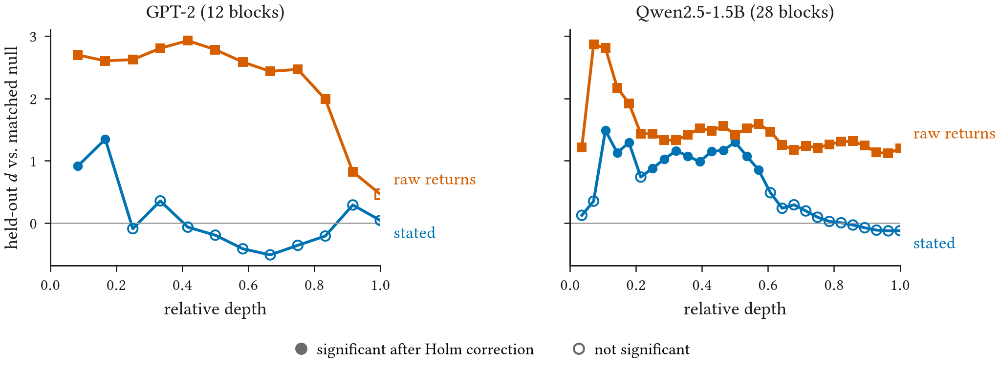
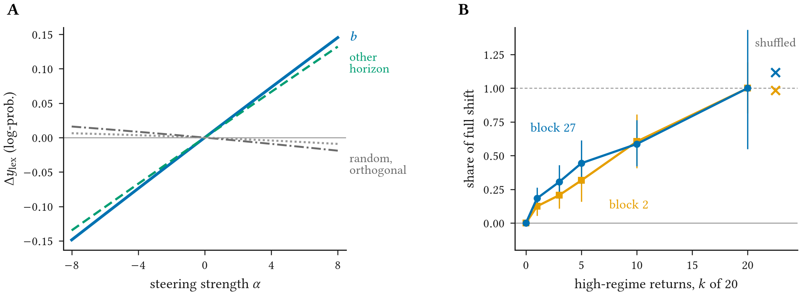
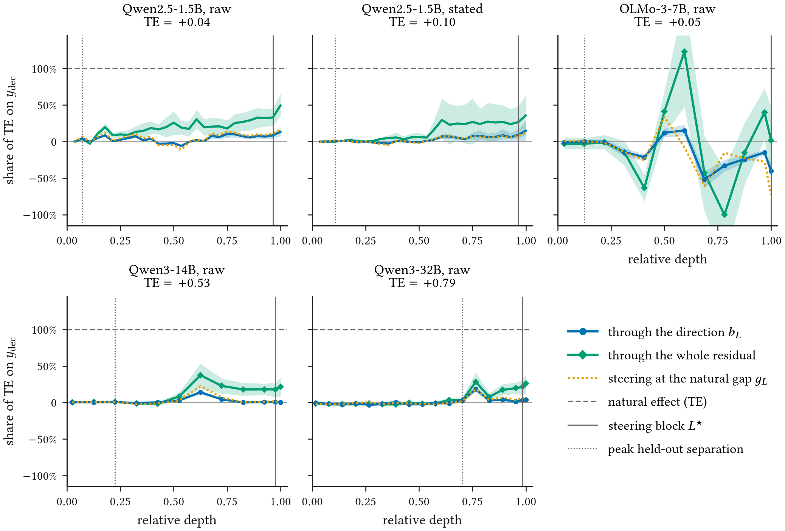
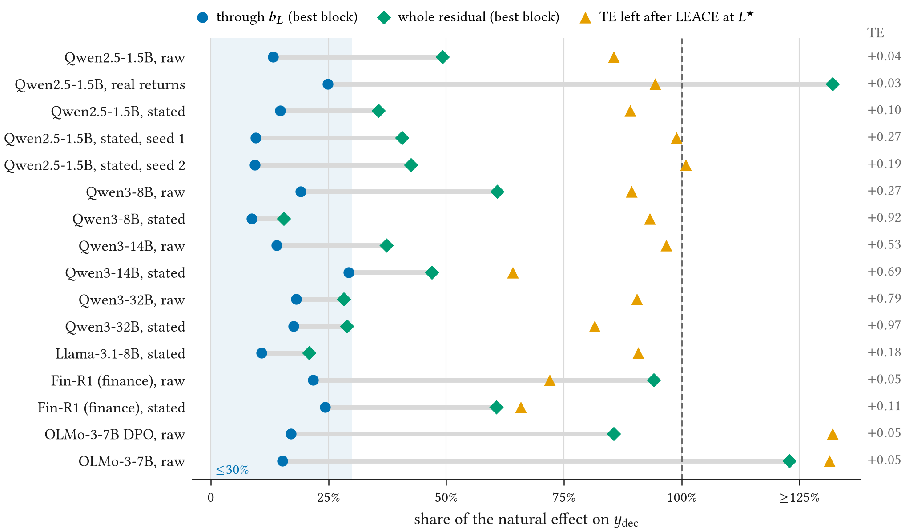

Abstract
Mechanistic interpretability is increasingly proposed as a way to inspect and steer what a financial language model “believes” about risk. A convincing risk-belief direction bundles four claims: the direction represents the risk regime, intervening on it changes the output, the effect is specific to the intended concept, and the model uses the direction when it responds to riskier inputs. Standard pipelines can produce strong numbers for all four while establishing at most one. We audit this bundle for a difference-of-means volatility direction in models reading a market context and an earnings-call disclosure, from GPT-2 and Qwen2.5-1.5B to Qwen3-32B, a finance-tuned model, and OLMo-3 after each post-training stage. Seven checks map to the four claims: matched and surface nulls, leave-one-firm-out estimation, multiplicity correction, output-based readouts, random and competing-concept controls, an input-leakage control that replaces the stated volatility with raw returns, and causal mediation and erasure at every block. The naive pipeline’s headline results, a steering effect of Cohen’s \(d\approx118\) and a perfect regime probe, re-read the steered axis and the stated number. Representation survives: computed from raw returns, synthetic or real, the regime separates beyond a matched null in every model, as an order-invariant aggregate of return magnitudes. Intervention survives only with qualifications: steering moves an explicit High/Low risk judgement, but at the selected block only by editing the positions where the answer is read, at 20–30 times the natural shift in the small models, and a direction fit on non-financial “intensity” sentences steers as well. Use is not supported. Across 16 runs with a natural effect, the direction carries at most about 30% of the model’s response to riskier inputs at any block (Qwen2.5-1.5B: 0.004 of 0.043), and erasing the regime leaves at least 64% of the judgement in place, even where the reasoning steps as a whole carry the effect. A representation can be decodable and steerable without being what the model uses; we translate this into concrete requirements for validating representation-level explanations of financial models.
Four Claims in One Direction
Interpretability is increasingly offered as evidence that a financial language model reasons soundly about risk. The usual evidence is a direction in the model's activations. Contrast inputs from calm and turbulent markets, take the difference of the average activations, and show that pushing the model along that difference makes it talk about risk. To a model validator, this looks like the evidence of conceptual soundness that supervisory guidance such as SR 11-7 asks for.
We argue that such a “risk-belief direction” bundles four separate claims, and each one needs its own evidence:
- (R) Representation. The direction encodes the risk regime, not just the surface features of the input that change along with it.
- (I) Intervention. Moving the activations along the direction changes what the model outputs.
- (S) Specificity. The effect belongs to the intended concept, risk at a stated horizon, and not to a nearby one.
- (U) Natural use. When the model sees a riskier input, its response actually travels through the direction.
Natural use is the claim a validator usually wants, and the one that standard pipelines never test. A first version of our own pipeline reported a steering effect of Cohen's \(d \approx 118\) and a regime probe with 100% accuracy. The first number re-read the axis we had just pushed along. The second read the volatility figure printed in the prompt. Neither said anything about use.
Decodable beyond a matched null, at every block, once the model must compute the regime from returns.
✓ SupportedSteering moves the risk judgement, but only at 21× the natural shift and at the answer position.
◐ With qualificationsThe models' judgements ignore the horizon even when the ground truth does not.
? Untestable hereThe direction carries at most about 30% of the model's response to riskier inputs, in every run.
✗ Not supportedFinding a Risk Direction
We give a model a market context and an earnings-call disclosure for a firm, followed by eight reasoning-step markers, and ask it to assess downside risk. Each of 16 synthetic firms appears twice: once in a calm period, with daily volatility of 0.8%, and once in a turbulent one, at 2.6%. The calm-period disclosure is held fixed, so only the market context changes. The context either states the annualised volatility as a number or gives only the last 20 daily returns (raw). In the raw format the model has to work out the regime itself.
Let \(\bar h_L(x)\) be the model's residual stream at block \(L\), averaged over the marker tokens. For each firm we subtract the calm activation from the turbulent one, average these differences over firms, and normalise:
The block with the largest difference is 27 of 28 in Qwen2.5-1.5B and the last block in GPT-2. We never measure an effect on the steered axis itself. Instead we append “Final answer. Overall downside risk (High or Low):” and read the model's own judgement, \(y_{\mathrm{dec}}(x) = \log p(\text{High}\mid x^{\mathrm q}) - \log p(\text{Low}\mid x^{\mathrm q})\). Positive values mean the model leans towards High. Steering adds \(\alpha b\) to the residual at every token from the first marker to the end of the prompt. To make \(\alpha\) interpretable, we compare it with the natural gap \(g = \tfrac1n\sum_i \langle \delta_i^{L}, b\rangle\), the distance the regime itself moves the residual along \(b\).
Whether the model uses \(b\) is a mediation question. We run the model on the calm input, but set the \(b\)-coordinate of its residual to the value it takes on the turbulent input, leaving everything orthogonal to \(b\) untouched. With \(P_b = bb^\top\),
If the model uses \(b\), the indirect effect NIE should account for most of the total effect TE. Patching the whole residual instead of one coordinate gives an upper bound on what any direction at those positions could carry. All \(p\)-values are firm-level permutation tests, and all intervals are firm-level bootstraps.
Decodable and Steerable
We audit GPT-2 and Qwen2.5-1.5B in full, then repeat the key checks on Qwen3-8B, -14B and -32B, Llama-3.1-8B, the finance-tuned Fin-R1, and OLMo-3-7B after each post-training stage.
The naive evidence dissolves
Steering moves the projection on \(b\) by exactly \(\alpha\), and that is all that \(d \approx 118\) measured. The localisation evidence goes next. A null that only reformats the prompt is beaten by almost any edit, so we compare against a matched null that swaps in another firm's context from the same regime. It changes as many numbers as the treatment, but not the regime. We also fit each direction with the firm under test held out.

We observe that when the volatility is stated as a number, the regime signal at the steering block vanishes against this null (\(d = 0.04\), \(p = 0.45\) in GPT-2; \(d = -0.12\) in Qwen). The perfect probe at block 1 was reading the digits of the stated number. With raw returns the model has to compute the regime, and it does. Separation beyond the matched null holds at every Qwen block (\(d = 1.12\) at block 27), in two further seeds, with the returns written in basis points, and with real daily returns of 16 large US stocks.
What is represented is a summary of return sizes
Separation alone does not show temporal reasoning, because volatility depends only on how large the returns are. Two controls distinguish these readings (Figure 2B). Replacing the \(k\) most recent calm returns with turbulent ones moves the representation gradually, by 18%, 30%, 44% and 59% of the full shift for \(k = 1, 3, 5, 10\), so no single large return triggers it. Shuffling the turbulent returns, which destroys volatility clustering, leaves it unchanged. The model represents an order-invariant summary of return magnitudes. That is consistent with a volatility estimate, but it is not evidence of a model of how returns depend on one another over time.
Steering works when pushed hard, at the answer
At block 27, steering along \(b\) moves Qwen's High/Low judgement by +0.098 at \(\alpha = 8\), against a mean absolute effect of 0.050 for random directions of the same norm. Figure 2A shows the same pattern on the next-token readout. Two further checks change how this number should be read. First, the regime itself moves the residual along \(b\) by only \(g = 0.38\), so \(\alpha = 8\) is 21 times the natural shift. Steered by \(\alpha = g\), the judgement moves by +0.005. Second, when the edit stops before the appended question, steering at block 27 no longer moves the judgement at all. The effect came from writing at the positions where the answer is read.

Nor does steering single out volatility. A direction fit on short non-financial sentences contrasting calm and intense scenes (storms, crowds, engines), with cosine 0.09 to \(b\), moves the judgement further (+0.136). Horizon specificity cannot be tested at all. When we build windows whose risk should differ between the near and the medium term, Qwen rates them the same for both horizons (interaction \(-0.004\) [\(-0.009\), 0.001]). The models' judgements do not depend on the horizon, so no direction can encode a horizon-specific belief that they use.
But Not Used
Switching Qwen2.5-1.5B from calm to turbulent returns raises its High/Low judgement by TE = +0.043 [0.023, 0.063]. Patching only the \(b\)-coordinate carries NIE = +0.004 of it, about a tenth. Because the steering block is chosen by raw norm, which favours late blocks, we repeat the decomposition at every block, with the direction refit there.

We observe three things. First, no block rescues the direction. Its largest indirect effect anywhere is +0.006, and steering by the natural gap tracks it closely: an edit of natural size along \(b_L\) does what the direction does naturally, and no more. Second, the reasoning-step positions as a whole carry more than \(b\), but far from everything. The rest of the effect reaches the answer from the context and question tokens directly. Third, erasing all linearly available regime information at block 27 with LEACE leaves 86% of the effect in place.

The same picture holds in all 16 runs with a natural effect, from 1.5B to 32B parameters, in the finance-tuned Fin-R1, and after each OLMo-3 post-training stage. The strongest case for use, Qwen3-14B with the stated number, reaches 29%. In OLMo-3-7B and Fin-R1 with raw returns, the reasoning-step positions carry 86–123% of the effect at their best block, yet the direction carries only 15–22%. The regime information that the judgement uses passes through those positions, but not along the difference-of-means direction.
The Math, Step by Step
The video below builds each quantity in the audit from the activations up, on Qwen2.5-1.5B with raw returns: how the direction is found, what steering does to the residual stream, and how patching a single coordinate separates what the model could do with the direction from what it does.
What a Validator Can Claim
The audit supports a narrower statement than the naive pipeline. A validator can claim that a magnitude-based volatility signal is linearly represented beyond matched surface variation, and that pushing along the difference-of-means direction shifts the model's risk judgement, provided the strength and the edited positions are stated. They cannot claim that this direction is how the model reaches its judgement. For a model that drafts risk commentary, the practical consequence is that steering along such a direction is not a faithful way to explain or correct its risk judgements: most of the judgement would be untouched.
None of the requirements below is new on its own. Our point is that on a realistic financial claim, each one changes the conclusion. A representation-level explanation offered in model validation should come with:
- Output-based readouts. Effects measured on the model's logits, in output units, never as a re-projection on the steered axis.
- Out-of-sample directions. Directions fit with the issuer held out, with the layer search corrected for multiplicity and reported at every block.
- Matched nulls and leakage controls. Nulls that change as much input as the treatment, and a raw-input control whenever the prompt states the target quantity.
- Competing directions. Comparisons with concept directions fit outside finance and with the absolute effect of random directions.
- Steering in natural units. Strength reported as a multiple of the natural shift, with edits that exclude the positions where the answer is read.
- Mediation with bounds. Natural direct and indirect effects with intervals, bracketed by the whole residual and by erasure, after showing that the natural effect exists across data draws.
Limitations
Our firms and disclosures are synthetic, with 16 firms per run. Real return windows replicate the representation result and show a natural decision effect, but real earnings-call transcripts may behave differently. Both readouts are single-token proxies rather than risk estimates or portfolio decisions. The mediator we patch is the set of reasoning-step positions. The regime may also be carried, and used, at the context tokens, which differ in length across regimes and cannot be patched one-to-one. A learned subspace or a nonlinear encoding could carry more than the linear directions we test, though never more than the whole-residual bound at the same positions. Testing horizon specificity requires models whose judgements depend on the horizon.
BibTeX
@inproceedings{tiku2026decodable,
title = {Decodable, Steerable, but Used? Auditing a Latent Risk Direction in Financial Language Models},
author = {Tiku, Sarvesh},
booktitle = {IAFM'26: Interpretability \& Alignment of Financial Models, Workshop at ACM ICAIF 2026},
year = {2026}
}